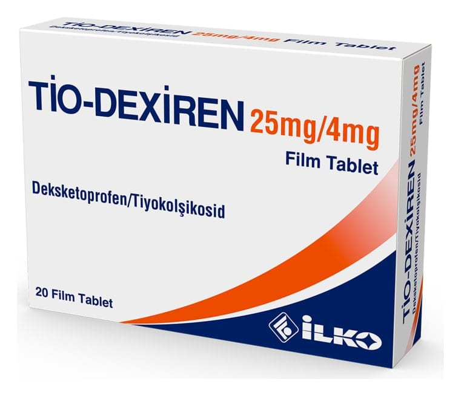

Tio-Dexiren 25 mg/ 4 mg Film Kaplı Tablet, 20 Adet

Ne için kullanılır
KT · Bölüm 1TİO-DEXİREN film kaplı tablet, etkin madde olarak deksketoprofen ve tiyokolşikosid içerir.
TİO-DEXİREN, sarı renkli, yuvarlak, bikonveks, çift tarafı çentikli film kaplı tabletlerdir. Tabletlerdeki çentiğin amacı yalnızca yutmak için tabletin kırılmasını kolaylaştırmaktır. Tabletin eşit dozlara bölünmesi için değildir.
TİO-DEXİREN, 20 film kaplı tablet içeren PVC/PVDC/ALU blister ambalajlarda sunulmaktadır.
TİO-DEXİREN’in içeriğindeki deksketoprofen, steroid olmayan iltihap giderici ilaçlar (NSAİİ) olarak adlandırılan ilaç grubundan bir ağrı kesicidir. TİO-DEXİREN’in içeriğindeki tiyokolşikosid esas olarak kas gevşetici etkinliğe sahiptir. Tiyokolşikosid, ağrılı kas kramplarının belirtilere yönelik tedavisi amacıyla kullanılır.
TİO-DEXİREN osteoartrit (kireçlenme), vertebral kolonun (omurganın) ağrılı sendromları, eklem
dışı romatizma, ağrılı kas kasılmalarının belirtilere yönelik tedavisinde, travma ve ameliyat sonrası oluşan ağrının tedavisinde kullanılır.